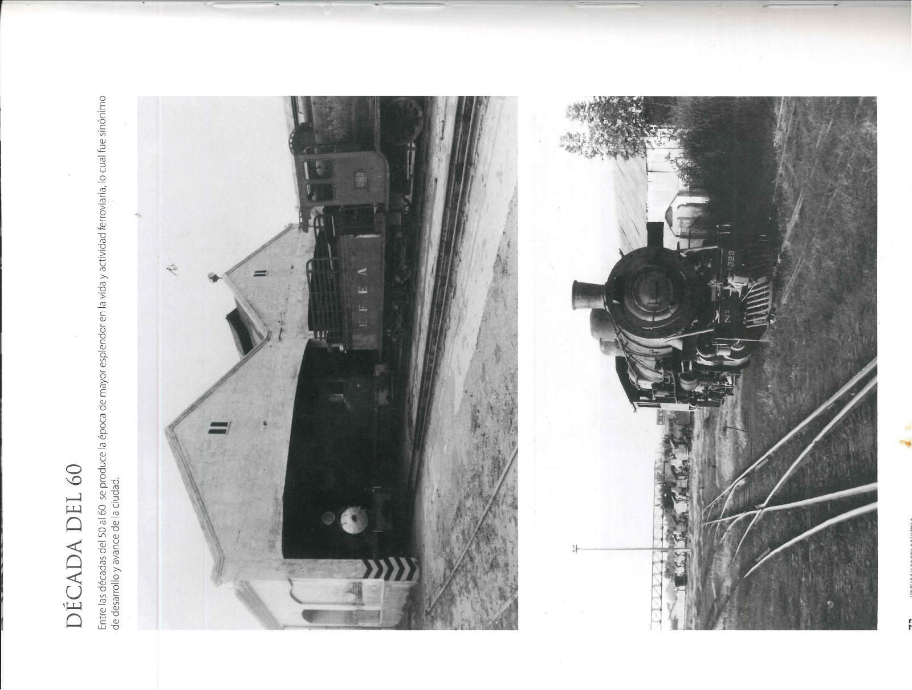

El Puente Negro
Presiona el botón de voz en cada categoría para escuchar el relato y lee la historia completa debajo

Para comprender la verdadera dimensión del Puente Negro, es necesario viajar mentalmente a los primeros años del siglo XX, una época en la que el territorio argentino experimentaba una transformación radical impulsada por la llegada masiva del sistema ferroviario. En Cruz del Eje, al igual que en puntos estratégicos de todo el país, el tren no significaba simplemente un medio de transporte: era el auténtico motor del progreso, la clave que dictaba el ritmo de la economía, el comercio y la vida cotidiana de miles de habitantes.
El origen de esta construcción se encuentra ligado directamente a la necesidad de vertebrar el territorio y conectar de forma eficiente la producción regional con los grandes centros urbanos de la provincia de Córdoba y del país. El Puente Negro nació para cumplir un rol fundamental en la infraestructura de transporte, permitiendo el paso seguro de formaciones ferroviarias cargadas tanto de pasajeros como de la producción local a través de accidentes geográficos complejos. Con el correr de las décadas, este paso elevado dejó de ser una simple vía de tránsito de hierro para convertirse en un símbolo imborrable de identidad local, un auténtico monumento vivo que nos recuerda aquellos años en los que el sonido del silbato del tren marcaba el pulso diario de la ciudad.

Si su historia conmueve, su arquitectura y diseño técnico maravillan a cualquiera que se detenga a observarlo con atención. Constructivamente, el Puente Negro destaca de manera absoluta por el uso característico del hierro forjado y el acero remachado, materiales que definieron por completo la estética y la robustez de la arquitectura industrial de finales del siglo XIX y principios del siglo XX.
El corazón de su diseño estructural descansa en un sistema de vigas metálicas dispuestas en celosía —un entramado geométrico de barras entrelazadas en forma de triángulos—. Esta configuración técnica no fue elegida al azar: la celosía posee una capacidad extraordinaria para repartir las cargas de manera uniforme, permitiendo soportar el peso monumental y las vibraciones constantes de las pesadas locomotoras de la época sin sufrir deformaciones.
Asimismo, la estructura fue ideada estratégicamente para desafiar y resistir con solidez las fuertes crecidas de agua de la región, soportando las exigencias climáticas más duras gracias a la precisión de sus ensamblajes y a sus sólidos pilares de apoyo. Cada remache, cada barra de acero y cada ángulo de su diseño reflejan la maestría de una ingeniería de vanguardia que priorizaba la durabilidad y la funcionalidad extrema. Hoy en día, contemplar el Puente Negro es hacer un viaje al pasado, valorando una obra maestra de la metalurgia que, a pesar del paso del tiempo, sigue erguida como testimonio mudo de una época donde las estructuras se construían para perdurar eternamente.